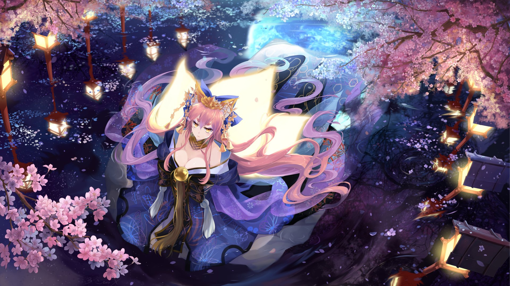
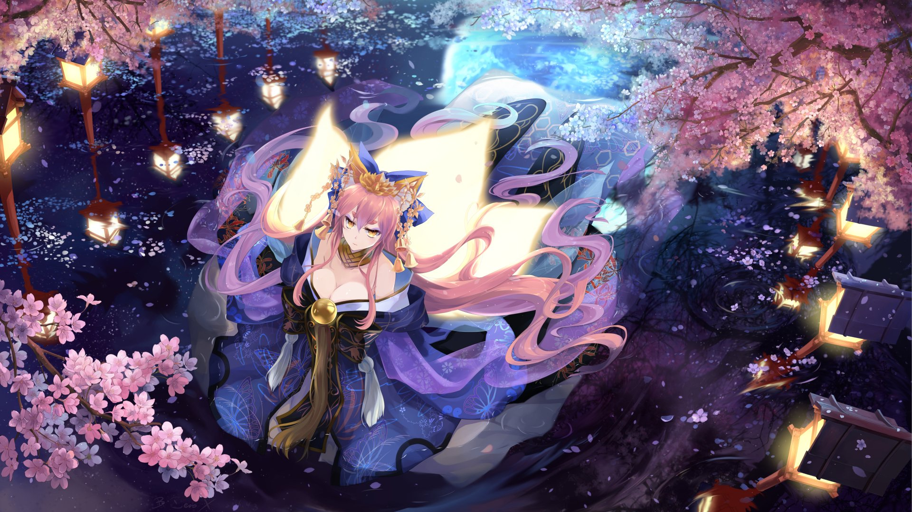

Series
 


Fate/Stay night Heaven's feel III. Spring Song
Fate/stay night: Heaven's Feel III. spring song is a Japanese anime fantasy film produced by ufotable and directed by Tomonori Sudō. The story continues immediately from the events of Fate/stay night: Heaven's Feel II. lost butterfly, and is the final installment in the Fate/stay night: Heaven's Feel trilogy. It premiered in Japan on August 15, 2020. Learn more>>.
Fate/Grand Order THE MOVIE Divine Realm of the Round Table: Camelot Wandering: Agateram
A two-part anime film adaptation, titled Fate/Grand Order - Divine Realm of the Round Table: Camelot (Japanese: フェイト/グランドオーダー -神聖円卓領域 キャメロット-, Hepburn: Feito/Gurando Ōdā Shinsei Entaku Ryōiki Kyamerotto) is being produced by Production I.G and Signal.MD, adapting the 6th chapter of the game. Ukyō Kodachi will write the first films' scripts, and Keita Haga and Hideyuki Fukasawa are composing the films' scores. Kei Suezawa is directing the first film at Signal.MD; Kazuto Arai is directing the second film at Production I.G. Both films feature animation character designs by Mieko Hosoi, Kazuchika Kise and Nakaya Onsen, who are adapting Takashi Takeuchi's original designs. The first of two films, subtitled Wandering; Airgetlám, was slated to premiere on August 15, 2020, but has been delayed to December 5, 2020 due to the COVID-19 pandemic. Maaya Sakamoto will perform the song "Dokuhaku" (独白, "Monologue") as the first film's theme..
Fate/Grand Order Final Singularity - Grand Temple of Time: Solomon
“Fate/Grand Order – Absolute Demonic Front: Babylonia”（Fate/Grand Order -絶対魔獣戦線バビロニア-）This is an animation based on the popular plot of “Fate/Grand Order”, a mobile game released by TYPE-MOON, ” Order VII: The Absolute Frontline in the War Against the Demonic Beasts: Babylonia”. Fujimaru and Mash, the pair who have raced through six previous Singularities, embark on their final battle. After the final return aired in Japan on March 21, 2020, it was also announced that an anime “Fate/Grand Order -Final Singularity: The Grand Temple of Time Salomon-” （Fate/Grand Order -終局特異点 冠位時間神殿ソロモン-）will be produced.